Hardware product engineering release package
Ruggedized Outdoor IoT Sensor Module
A hardware/product engineering portfolio project focused on enclosure design, electronics packaging, firmware boundaries, DFM notes and early validation logic. The strongest evidence is the SolidWorks CAD package, Abaqus screening cases, Keil/uVision firmware source and engineering release notes.
Engineering Snapshot
Defined enclosure layout, sealing path, fastening path, service access and validation plan.
SolidWorks assembly, STEP/STL, Abaqus screening images, Keil C project and release notes.
CAD package and source-code screenshots are real files opened from the local project.
Screw bosses, gasket stack-up, PCB/battery placeholders, strap mount and cable/service features.
Good for CAD/DFM/validation discussion; physical prototype, EDA layout and field tests remain next work.
Useful evidence for enclosure design, sensor packaging and early validation internships.
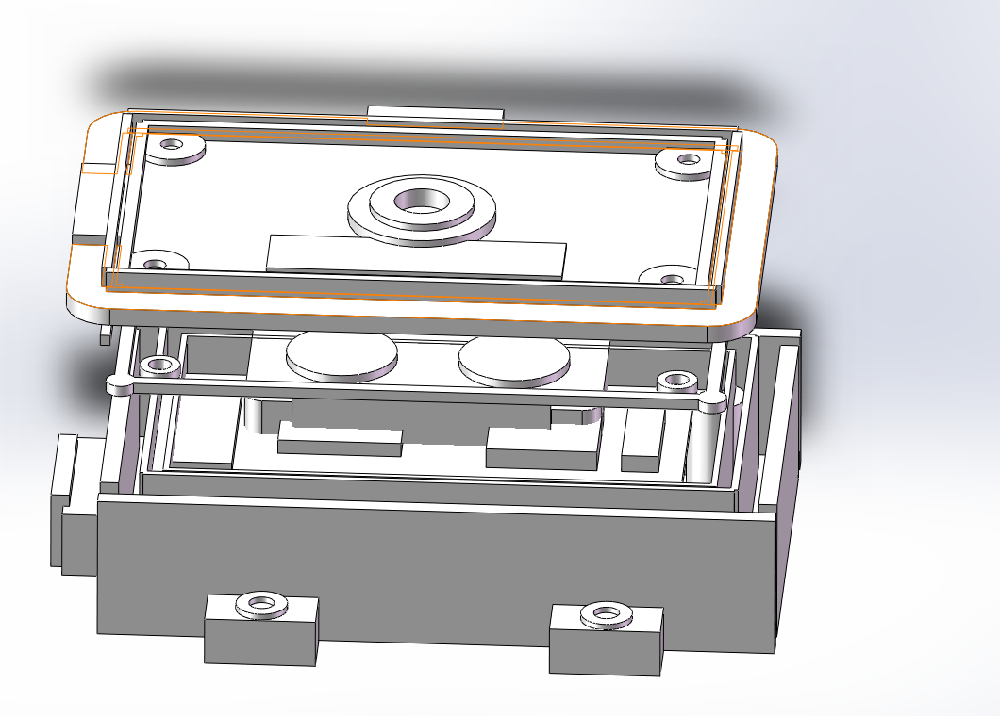
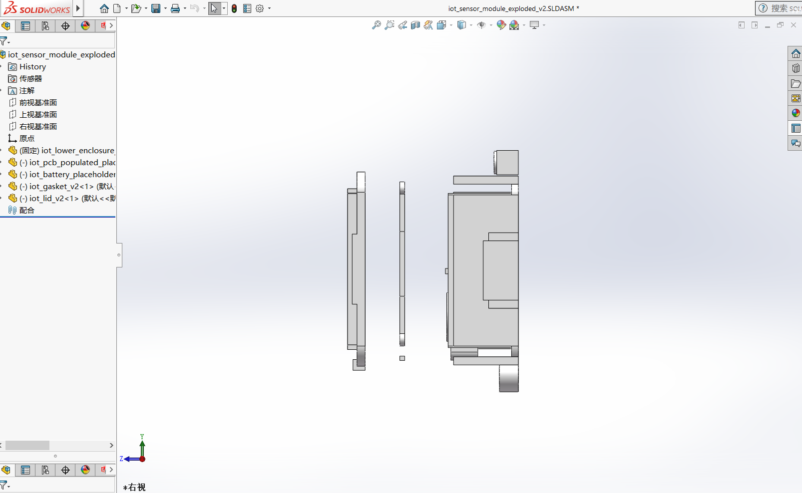
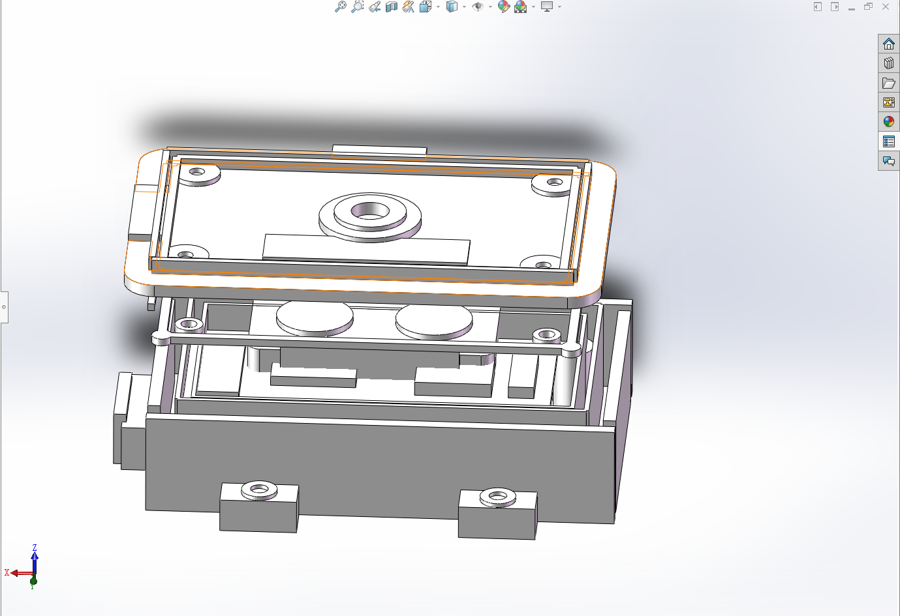
Why This Project Exists
This project complements the NZ ventilation case study. The ventilation project targets HVAC, building services and commissioning. This project targets product engineering: enclosure design, DFM, test fixtures, electronics packaging, firmware boundaries and reliability validation.
- SolidWorks CAD V2 includes detailed lower enclosure, upper lid, gasket, PCB placeholder, battery placeholder and exploded assembly.
- The model now makes the sealing path, fastening path, strap-mount path and service-access path visible.
- Electronics work is presented as a documented design package with BOM, net ownership, power budget and firmware ownership notes.
- Keil / embedded C now includes a state machine, pin map, startup file, scatter file and clean uVision ARMCM3 target build.
- Abaqus is used for completed strap-mount pull, enclosure corner-load and screw-boss compression screening load cases.
- Thermal exposure simulation identifies sealed-enclosure overheating risk and design actions before prototype testing.
CAD V2 Deliverables
SolidWorks Model Set
- Lower enclosure with screw boss rings, PCB standoff rings, gasket groove intent, internal ribs and battery restraint clips.
- Upper lid with counterbored screw-pad intent, membrane clamp ring, gasket compression ribs and label recess.
- Rear strap-mount lugs, side service/debug port boss and front cable-gland ring.
- More detailed PCB and battery envelopes for package checking.
- Detailed exploded assembly plus native SolidWorks, STEP and STL outputs.
Engineering Definition
- Requirements matrix covering enclosure, sealing, mounting, electronics, firmware and validation.
- System architecture linking mechanical design, firmware boundaries and validation fixtures.
- Initial DFMEA for gasket, strap mount, screw boss, service port, battery restraint, thermal risk and assembly error.
- CAD design log documenting current limitations and next modelling tasks.
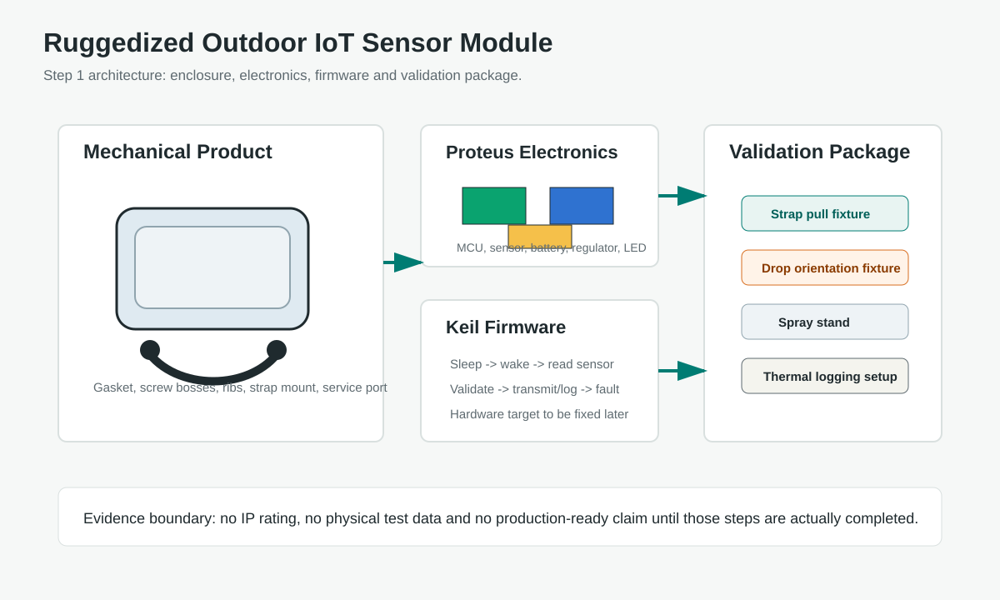
Abaqus Strap-Mount FEA
A screening Abaqus 2025 load case was added for the rear strap-mount lugs. The simplified model applies a 150 N total strap pull, split across the two lug holes, using an assumed PC-ABS material and C3D10 solid mesh.
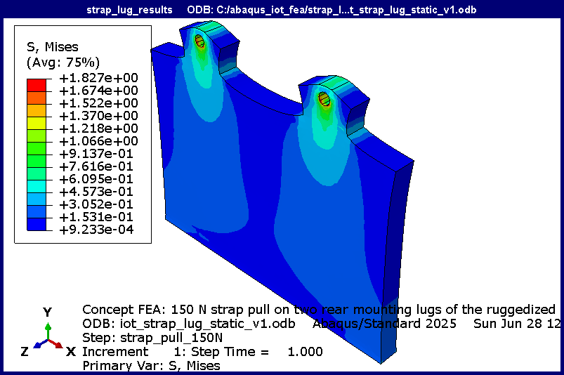
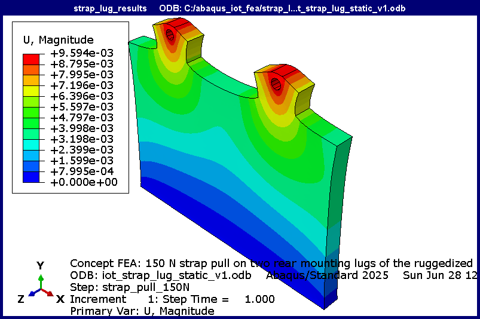
This is early screening FEA: the geometry, support boundary and material values are simplified. It is useful design evidence for load-path thinking, not a certified safety factor or physical validation result.
Abaqus Corner-Load FEA
A second Abaqus 2025 load case screens early drop/handling risk. The simplified enclosure plate surrogate applies a 120 N equivalent static load to one outer corner, with four screw-line support patches representing the fastening load path.
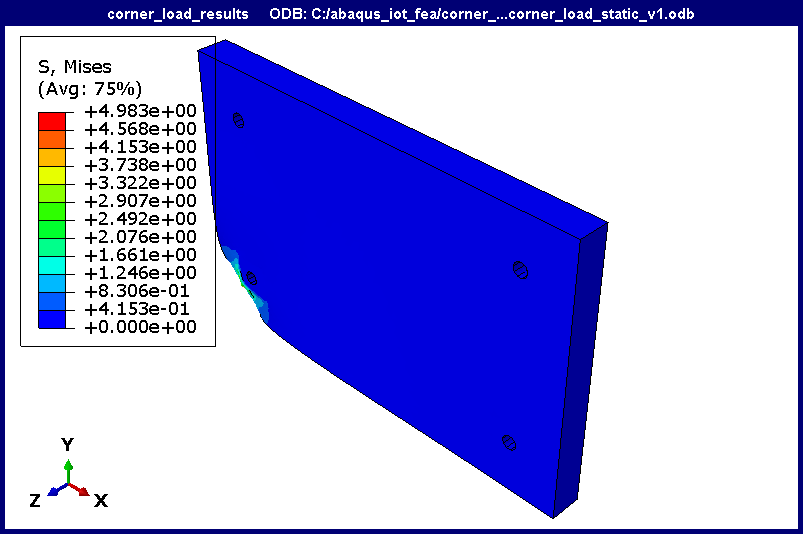
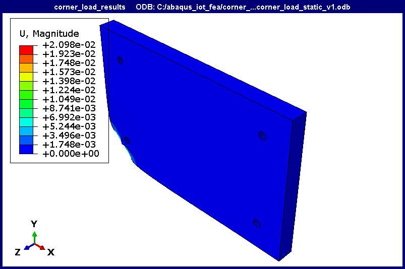
This result documents how the design would be screened before a physical drop test. It is not a dynamic impact certification, but it shows the load-case definition, boundary-condition thinking and evidence control.
Abaqus Screw-Boss Compression FEA
A third Abaqus 2025 load case screens assembly risk at the screw boss. The model uses an axisymmetric local plate and boss section, applying a 90 N equivalent screw clamp load to the top annular contact edge.
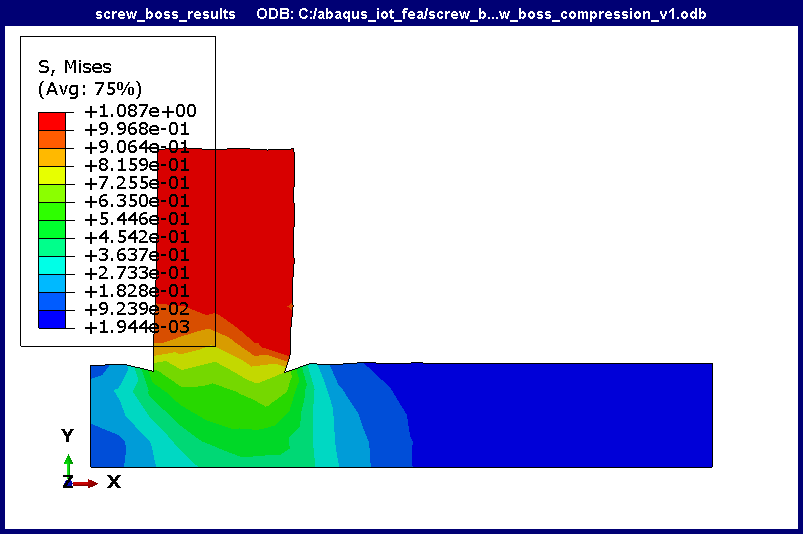
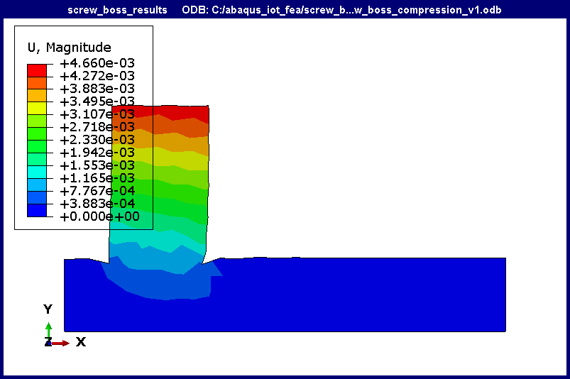
This is a design-screening result for boss compression and cracking risk. It does not model detailed threads, torque scatter, creep, inserts or a physical pull-out test.
Electronics + Firmware Architecture
The project links the mechanical enclosure to a Keil/uVision firmware project, STM32L4 low-power device-pack audit and PCB design package and candidate MCU porting plan. The current evidence covers component candidates, connection-level net ownership, power-budget assumptions, state-machine behaviour, battery/sensor fault handling and the sealed service/debug interface.
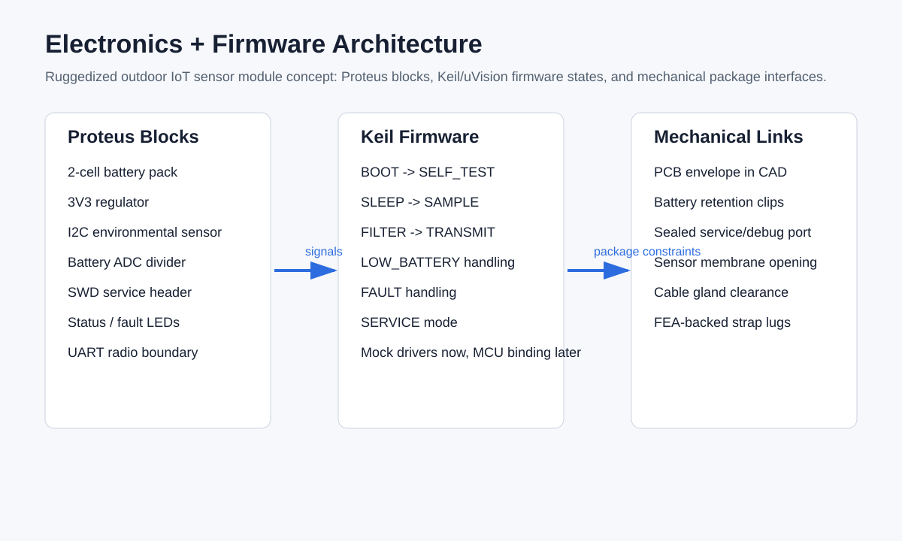
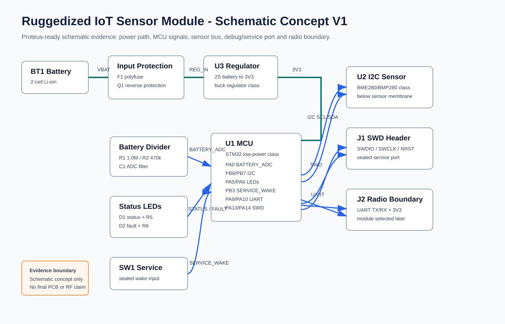
Electronics Evidence
- Proteus is not used as visual evidence here because the current `.pdsprj` opens to an empty schematic canvas.
- PCB design package includes board-level BOM, netlist, placement plan, stackup and DRC-style review, but not a native EDA layout screenshot.
- Connection-level netlist linking each electrical signal to firmware ownership, mechanical packaging and validation intent.
- Candidate component table and early power budget for sleep, sample/filter, transmit-boundary, low-battery and service modes.
- Mechanical links to PCB envelope, battery restraint, sealed service/debug port and sensor membrane opening.
Firmware Evidence
- Keil/uVision ARMCM3 prototype target build verified through the local uVision command-line launcher.
- Clean ARM Compiler 6 / ARMCLANG build result: 0 errors, 0 warnings.
- Program size from the verified target build: Code 500 bytes, RO-data 80 bytes, RW-data 0 bytes, ZI-data 1024 bytes.
- STM32L4xx device pack installed and audited; STM32L432KCUx selected as the next low-power candidate MCU path.
- Candidate STM32L432 pin allocation and porting plan separate the current prototype build from the future board-specific target.
- Embedded C source structure includes state machine, sensor-driver abstraction, power monitor, startup assembly and linker scatter file.
- Pin map and firmware architecture note covering sleep, sampling, filtering, transmit, low-battery, fault and service states.
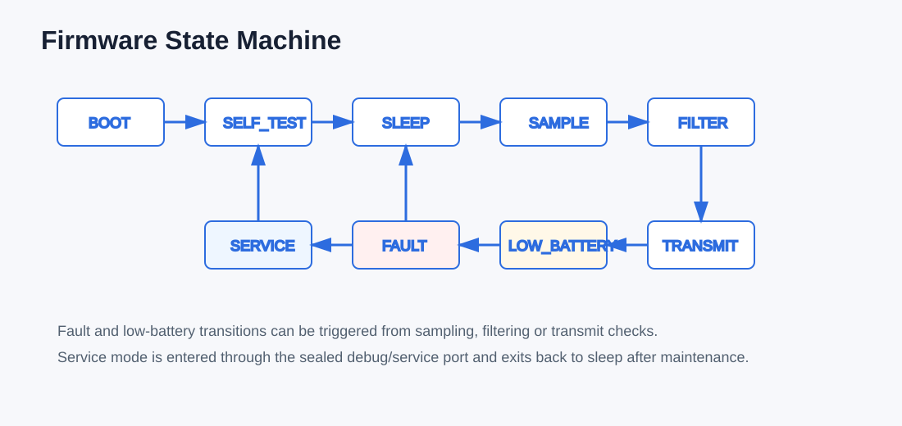
Real Tool Screenshots and Exports
This gallery uses screenshots or exports from actual project files. It separates completed CAD/FEA/firmware evidence from electronics and automation items that still need native-tool capture or physical testing.
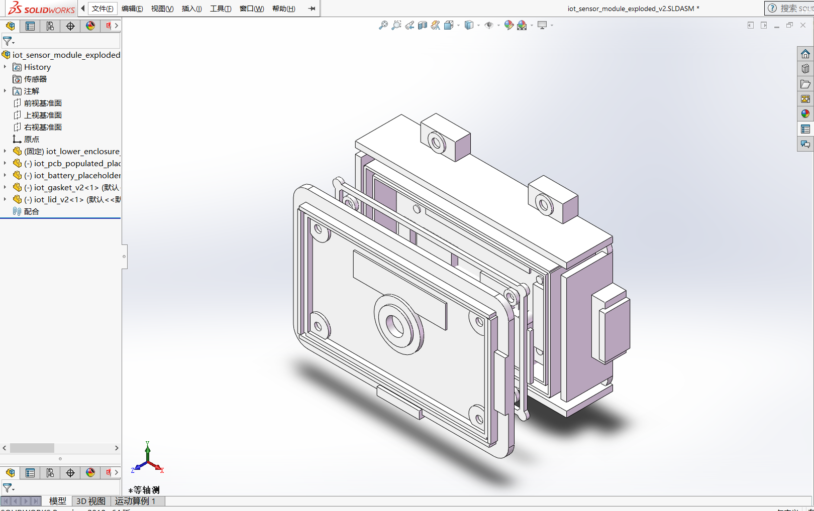
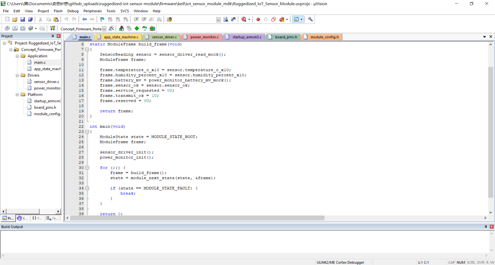
Next evidence to add: native EDA schematic/layout screenshots, DRC output, populated PCB images and PLC/HMI screenshots if the validation fixture is developed further.
Thermal Exposure Simulation
A lumped thermal RC model was added to screen sealed-enclosure temperature risk before physical hardware exists. The model combines a warm ambient ramp, external solar/lamp heat input and electronics duty-cycle pulses from the firmware transmit boundary.
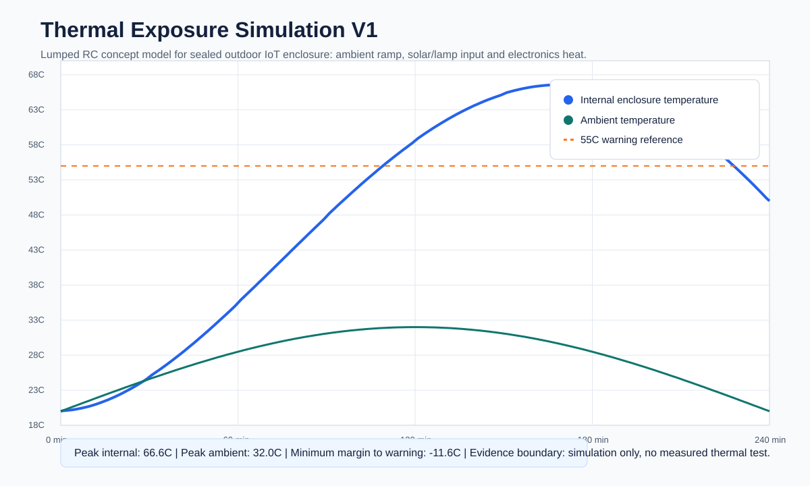
The result is intentionally treated as a risk flag, not a pass claim. Suggested actions include lighter enclosure colour, shaded mounting, reduced radio/LED duty cycle, vent membrane review and future internal/external temperature logging.
Engineering Release Package
A release package was added to make the project read like an engineering deliverable rather than only a modelling exercise. It includes drawing sheets, V2 BOM, DFM review, assembly instruction and a verification matrix that separates completed evidence from future physical validation.
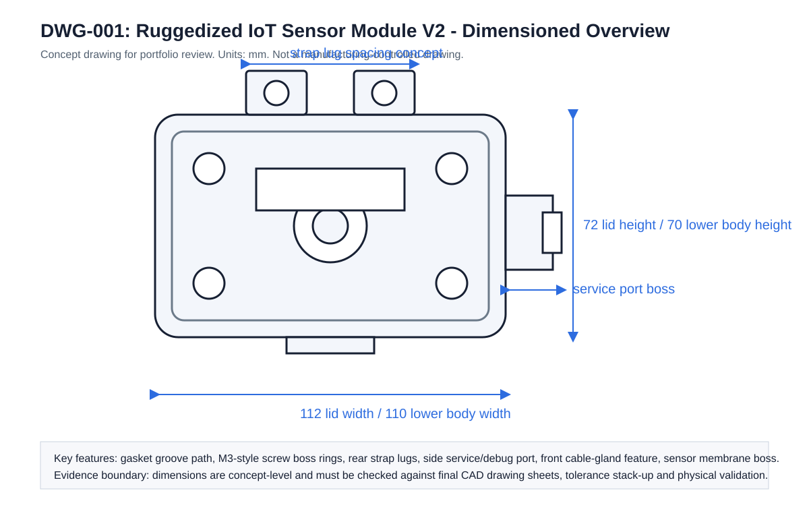
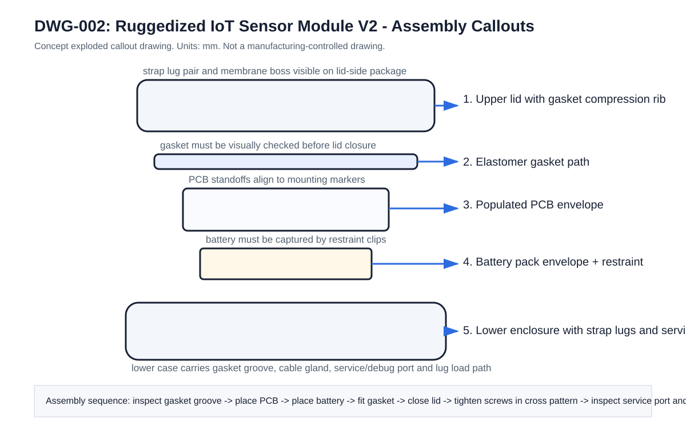
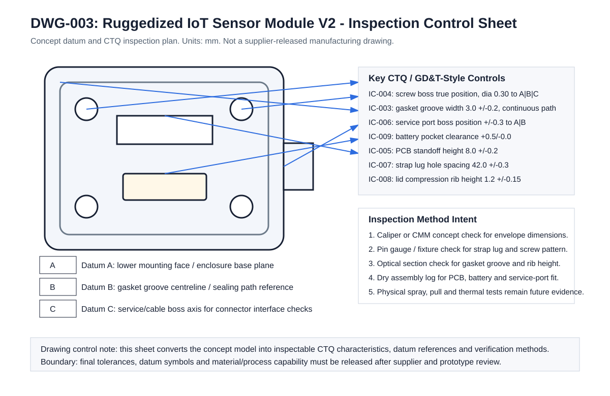
Release Contents
- Drawing register with dimensioned overview and assembly callout sheets.
- Inspection-control sheet with preliminary datum strategy, CTQ characteristics and inspection method intent.
- V2 BOM linked to current evidence and next actions.
- DFM checklist covering gasket compression, bosses, strap lugs, service port and cable gland.
- Assembly work instruction for gasket, PCB, battery, lid and service-port checks.
- PLC-style test fixture control package for repeatable spray, thermal, cooldown and fault validation cycles.
Validation Control
- Verification matrix traces CAD, FEA, firmware and electronics evidence to requirements.
- Firmware evidence separates the clean ARMCM3 prototype build from the STM32L4 candidate MCU path.
- CTQ inspection table links package features to datums, tolerances and future evidence.
- Software-completion boundary note separates completed digital evidence from hardware, supplier and proprietary-tool blockers.
- Physical pull, spray, drop and thermal tests are clearly marked as future work.
- Evidence gap register was updated so the project does not overclaim maturity.